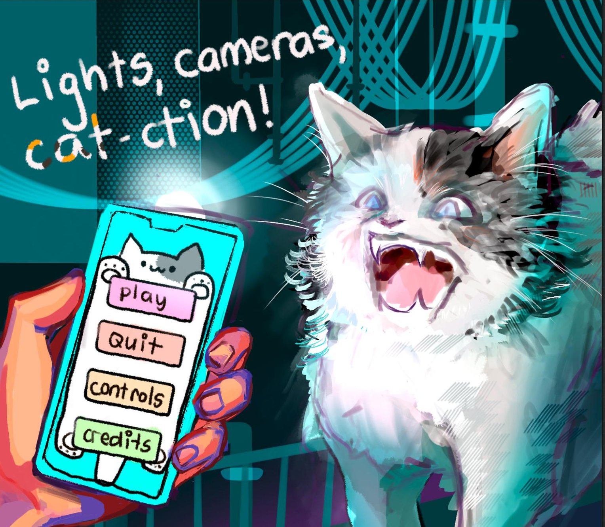
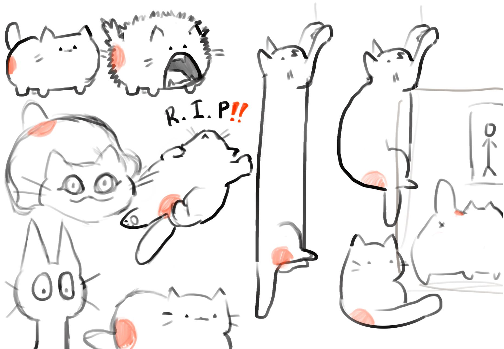

Fall
2022The Beginning
Joining Studio With No Programming Experience
I joined ACM Studio during my first quarter at UCLA. At the time, I had no programming knowledge. I simply wanted to find a relaxed club where I could meet other people who loved art, games, and creative projects.
I entered my first game jam, Ludum Dare 53, and designed a cute two-dimensional platformer with my teammates. The game followed a mischievous cat trying to avoid the flash of a camera.
It was my first experience creating something under intense time pressure. We did not finish the game, but I had so much fun that I spent the rest of the year learning functions, loops, conditionals, and the basic structure of programs.

